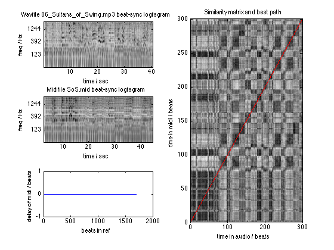
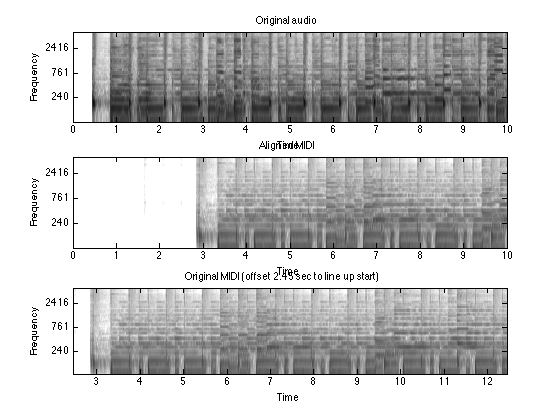

alignmidi - Aligning MIDI files to music audio
To obtain ground-truth transcriptions of real music audio, it is sometimes possible to find a MIDI version of the track which can then be aligned in time. The time-aligned MIDI events can then be taken as an approximate transcription of the audio. There are several ways to do this, including several choices of the domain in which to do the matching; one popular approach is to synthesize the MIDI version to audio, then do a time alignment between the original audio and the synthetic audio (see, e.g., Turetsky and Ellis ISMIR 2003, or Hu, Dannenberg, and Tzanetakis, WASPAA, 2003).
This matlab code refines that approach by first beat tracking both the original audio and the resynthesized MIDI, then doing the time warp alignment over units of complete beats. Since the remapping of MIDI event times will be done using each beat as an anchor point, the temporal precision is usually good (as long as the beat tracker worked.
Contents
Example usage
The code below shows how to run the alignment using the main alignmidi routine, and a couple of ways of how the outputs can be used.
% We will use a modified version of Christine Smit's readmidi_java % from http://www.ee.columbia.edu/~csmit/karaoke_midi.html . % If this doesn't work, you need to make sure KaraokeMidJava.jar % is in Matlab's classpath.txt if exist('readmidi_java') ~= 2; ... addpath(['midi_lib']); end % The main function takes a MIDI file and an audio file as input % The third arg is a flag to plot figures, and the fourth is a stem % for the output midis. midifile = 'SoS.mid'; wavfile = '06_Sultans_of_Swing.mp3'; doplot = 1; stem = 'tmp'; alignmidi(midifile,wavfile,doplot,stem); % With doplot set, the routine already plotted the results. zoom a little subplot(122) axis([0 300 0 300]) % A midi file warped to match audio is written to <stem>-mix.mid outmidi = [stem, '-mix.mid']; % Let's read it in, and play in stereo sr = 11025; domono = 1; [da,sr] = audioread(wavfile, sr, domono); [dm,sr] = midireadasaudio(outmidi, sr, domono); soundsc([da(1:20*sr), dm(1:20*sr)], sr);
dyld: DYLD_ environment variables being ignored because main executable (/usr/bin/osascript) is code signed with entitlements SD of 10..90% of path = 0 DP Best cost per pt 10..90 = 0.72426 Warn: 2 negative time events removed Warn: 8 negative time pitch wheel events removed Saved to tmp-mix.mid Wrote tmp-vox.mid Warn: 2 negative time events removed Warn: 8 negative time pitch wheel events removed Wrote tmp-ins.mid dyld: DYLD_ environment variables being ignored because main executable (/usr/bin/osascript) is code signed with entitlements
Comparing Outputs
We can plot log-frequency spectrograms to show the effect and quality of the alignment. Note that the aligned MIDI is not just shifted in time, but also scaled appropriately to keep every beat time lined up.
% Read original audio [da,sr] = audioread(wavfile,11025,1); % Read unaligned MIDI as audio [dm,sr] = midireadasaudio(midifile,11025,1); % .. and aligned version [dma,sr] = midireadasaudio(outmidi,11025,1); % Now plot subplot(311) logfsgram(da,512,sr) caxis([-40 40]) axis([0 10 0.5 73.5]) title('Original audio') subplot(312) logfsgram(dma,512,sr) caxis([-40 40]) axis([0 10 0.5 73.5]) title('Aligned MIDI') subplot(313) logfsgram(dm,512,sr) caxis([-40 40]) axis([2.45+[0 10] 0.5 73.5]) title('Original MIDI (offset 2.45 sec to line up start)')
dyld: DYLD_ environment variables being ignored because main executable (/usr/bin/osascript) is code signed with entitlements dyld: DYLD_ environment variables being ignored because main executable (/usr/bin/osascript) is code signed with entitlements
Installation
This package has been compiled for several targets using the Matlab compiler. You will also need to download and install the Matlab Compiler Runtime (MCR) Installer. Please see the table below:
| Architecture | Compiled package | MCR Installer |
|---|---|---|
| 64 bit Linux | alignmidi_GLNXA64.zip | Linux 64 bit MCR Installer |
| 64 bit MacOS | alignmidi_MACI64.zip | MACI64 MCR Installer |
The original Matlab code used to build this compiled target is available at http://www.ee.columbia.edu/~dpwe/resources/matlab/alignmidi
All sources are in the package alignmidi-v0.01.zip.
Feel free to contact me with any problems.
Notes
The included function audioread is able to read a wide range of sound file types, but relies on a number of other packages and/or support functions being installed. Most obscure of these is ReadSound, a MEX wrapper I wrote for the dpwelib sound file interface. See the audioread homepage for more details.
To link to the Java code for reading and writing MIDI files, you need to "edit classpath.txt" within Matlab, as described in Christine's instructions. And then you'll have to restart Matlab. Else you'll get an error like "Undefined variable "PianoRollViewParser" or class "PianoRollViewParser.parse"."
This code supercedes an earlier effort, alignmidiwav .
Referencing
If you use this work in a publication, I would be grateful if you referenced this page as follows:
D. P. W. Ellis (2013). "Aligning MIDI files to music audio", web resource. http://www.ee.columbia.edu/~dpwe/resources/matlab/alignmidi/
Acknowledgment
This project was supported in part by the NSF under grant IIS-1117015. Any opinions, findings and conclusions or recommendations expressed in this material are those of the authors and do not necessarily reflect the views of the Sponsors.
Changelog
% v0.01 2013-07-17 - Initial release % Last updated: $Date: 2011/12/09 20:30:34 $ % Dan Ellis <dpwe@ee.columbia.edu>